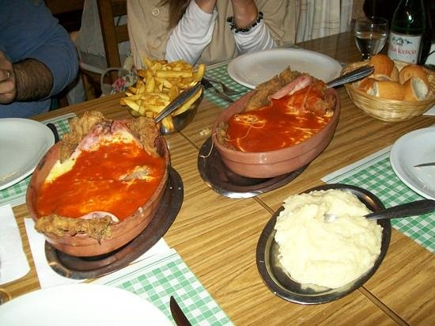

Francisco Gonzalez
Henry
tarea de HTML / CSS
No se si puedo elegir una sola comida, pero entre mis favoritas estan las empanadas fritas y la pizza de fugazzetta de "PIN PUN", el pollo al disco de mi viejo y la milanesa napolitana de la fonda del tio.
PIN PUN
La Fonda del Tio
Fotos de mis comidas favoritas:
-

-